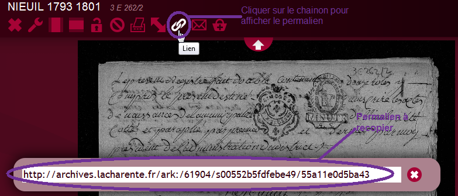
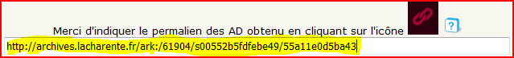

Comment copier un permalien
Lorsque la vue des AD s'affiche, cliquer sur les maillons en haut de la page. Un menu apparait avec le permalien sur la page.

Sélectionner le permalien en balayant l'adresse avec le nez de la souris. Pour le copier:
-
Sous Windows, cliquer sur les touches "Ctrl" et "C" en même temps.
- Sous Macintosh, cliquer sur les touches "Commande" et "C" en même temps.
Pour recopier le permalien:
cliquer dans la zone de saisie du permalien avec le bouton gauche de la
souris puis :
- Sous Windows, maintenir enfoncées les touches "Ctrl" et "V" en même temps
- Sous Macintosh, maintenir enfoncées les touches "Commande" et "V" en même temps.
ou bien cliquer dans la zone de saisie du permalien avec le bouton droit de la souris et cliquer sur "Copier"
